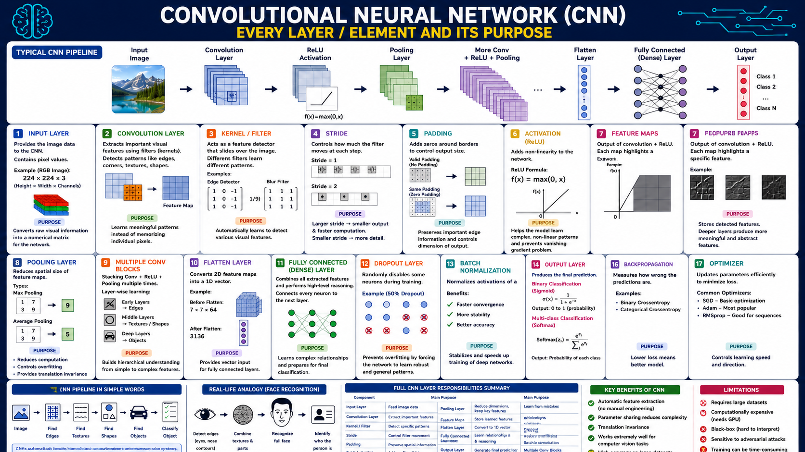

An interactive deep-dive into the architecture powering computer vision — built for your CGAI certification exam.
The architecture behind image recognition, object detection, and visual AI.
A Convolutional Neural Network (CNN) is a type of deep neural network designed to process grid-like data — especially images. Instead of connecting every pixel to every neuron (which would be computationally impossible at scale), CNNs use learnable filters (kernels) that slide across the image, detecting edges, textures, shapes, and eventually complex objects — layer by layer.
| Feature | Traditional NN (MLP) | CNN | Transformer (ViT) |
|---|---|---|---|
| Input type | Flat vectors | 2D/3D grids (images) | Patches / sequences |
| Parameter sharing | ✗ None | ✓ Kernel reuse | Partial |
| Translation invariance | ✗ No | ✓ Yes (pooling) | ✗ Needs augmentation |
| Local feature detection | ✗ Poor | ✓ Excellent | Global (attention) |
| Computational cost (small data) | Low | Medium | High |
| Best for | Tabular data | Images, video | Large-scale vision |
A small learnable matrix (e.g. 3×3) that slides over the image, computing dot products to detect patterns.
The output of a convolution operation — a 2D grid showing where a particular feature was detected.
How many pixels the kernel moves per step. Stride 1 = dense scan, Stride 2 = skip every other pixel.
Adding zeros around the image border to control output size and preserve edge information.
Downsampling feature maps — Max Pooling keeps the largest value in each region, reducing spatial size.
Rectified Linear Unit: f(x) = max(0, x). Introduces non-linearity, preventing the network from being a linear function.
From raw pixel to class label — click each step to explore.
The raw image is represented as a 3D tensor of shape (Height × Width × Channels). For a colour image: 224 × 224 × 3 (RGB).
Each pixel value ranges from 0–255 and is typically normalised to 0–1 before feeding into the network.
224 × 224 × 3 = 150,528 values fed as input.A kernel (e.g. 3×3) slides across the image with a given stride, computing element-wise multiplication and summing the result into a single output value — forming a feature map.
Multiple kernels run in parallel, each learning to detect a different feature (edges, curves, colours).
[ 1 0 -1 ]
[ 1 0 -1 ]
[ 1 0 -1 ]After each convolution, ReLU is applied element-wise: f(x) = max(0, x). All negative values become 0.
This introduces non-linearity — without it, stacking layers would just be equivalent to a single linear transformation, unable to learn complex patterns.
Max Pooling takes the maximum value from each region (e.g. 2×2), reducing the spatial dimensions by half. Average Pooling takes the mean instead.
Benefits: reduces computation, controls overfitting, provides translation invariance.
[1, 7 / 3, 9] → Output: 9 (the max)The Conv → ReLU → Pool block repeats multiple times. Each successive block sees increasingly abstract features:
Detect low-level features: edges, corners, gradients, colour blobs.
Combine edges into textures and shapes — wheels, eyes, fur patterns.
Detect semantic objects — faces, cars, cats. Highly abstract representations.
The 3D feature maps are stretched into a 1D vector so they can be fed into fully-connected (dense) layers.
Fully Connected layers combine all extracted features for high-level reasoning. The final output layer uses:
Sigmoid → output 0 to 1 (probability). Use for cat vs. not-cat.
Softmax → probability per class, all sum to 1. Use for cat/dog/bird/etc.
Click cells in the input matrix to change values and see the convolution result update live.
A 3×3 Edge Detection kernel slides over a 5×5 input. Click any input cell to toggle its value (0 or 8). Watch how the kernel detects intensity differences.
Higher values in the feature map = stronger edge detected at that location.
Where I is the input image, K is the kernel, and the sum runs over the kernel dimensions. The result is the degree to which the local image patch matches the kernel pattern.
Kernel moves 1 pixel at a time. Output is nearly the same size as input. Captures fine detail. Computationally expensive.
Kernel moves 2 pixels at a time. Output is half the size. Faster, but misses some detail. Common in downsampling.
Output shrinks: (n-f+1) × (n-f+1) for n×n input and f×f kernel. Edges of input get less "coverage".
Zeros added around input so output matches input size. Preserves spatial dimensions and edge information.
2×2 Max Pooling on a 4×4 feature map — the max value from each 2×2 region is kept:
Every layer, its purpose, and how they stack together.
How a CNN identifies a face in a photo, step by step:
| # | Component | Main Purpose | Key Detail |
|---|---|---|---|
| 1 | Input Layer | Feed image data | Shape: H×W×C (e.g. 224×224×3) |
| 2 | Convolution Layer | Extract local features | Learnable kernels, parameter sharing |
| 3 | Kernel / Filter | Detect specific patterns | Typically 3×3 or 5×5 |
| 4 | Stride | Control filter movement | Stride 2 halves spatial dimensions |
| 5 | Padding | Preserve spatial info | Valid (shrinks) vs Same (preserves) |
| 6 | ReLU Activation | Add non-linearity | f(x)=max(0,x), prevents vanishing gradients |
| 7 | Feature Maps | Store detected features | One per kernel; deeper = more abstract |
| 8 | Pooling Layer | Reduce spatial size | Max or Average, typically 2×2 stride 2 |
| 9 | Multiple Conv Blocks | Hierarchical learning | Simple → complex features |
| 10 | Flatten Layer | 3D → 1D vector | Connects conv to dense layers |
| 11 | Fully Connected Layer | Global reasoning | Every neuron connects to all inputs |
| 12 | Dropout Layer | Prevent overfitting | Randomly zero neurons during training (e.g. 50%) |
| 13 | Batch Normalisation | Stabilise training | Normalises activations per mini-batch |
| 14 | Output Layer | Final prediction | Sigmoid (binary) or Softmax (multi-class) |
| 15 | Loss Function | Measure error | Binary/Categorical Cross-entropy |
| 16 | Backpropagation | Compute gradients | Chain rule, propagates error backwards |
| 17 | Optimizer | Update weights | SGD, Adam (most popular), RMSprop |
During training, randomly sets a fraction of neurons to 0 (e.g. 50%). Forces the network to learn redundant representations — reducing overfitting on the training set.
Normalises layer inputs to have zero mean and unit variance per mini-batch. Speeds up training, allows higher learning rates, acts as mild regulariser.
After a forward pass, error is propagated backwards through the network using the chain rule of calculus. Gradients tell each weight how to change to reduce loss.
Benefits, limitations, and must-know facts from the CNN diagram.
Unlike traditional CV, CNNs learn their own features from data — no need to hand-engineer edge detectors or shape descriptors.
A single 3×3 kernel is reused across the entire image. A 224×224 image with 32 filters only needs 3×3×3×32 = 864 parameters for that layer — not millions.
Pooling layers make CNNs robust to where in the image an object appears. A cat in the top-left is detected the same as one in the bottom-right.
CNNs dominate image classification, object detection (YOLO, Faster R-CNN), segmentation, and medical imaging benchmarks.
CNNs typically need thousands to millions of labelled images to generalise well.
Training deep CNNs requires GPUs; inference can be slow on edge devices.
It's difficult to explain why a CNN made a specific prediction (though Grad-CAM helps).
Tiny, imperceptible pixel changes can completely fool a CNN — a security concern in critical systems.
Training from scratch on large datasets can take days to weeks even with GPUs.
The region of the input image that a particular neuron "sees". Grows with network depth.
Model memorises training data, fails on new images. Prevented by Dropout, Batch Norm, Data Augmentation.
-Σ y·log(ŷ). Measures how wrong the predicted probability distribution is vs the true labels.
Using a CNN pre-trained on ImageNet, then fine-tuning on your smaller dataset. Saves time and data.
Artificially expanding dataset via flipping, rotating, cropping, colour jitter — reduces overfitting.
Replaces Flatten in modern architectures (ResNet, EfficientNet) — averages each entire feature map to one value.
Visual reference materials for exam study.

This comprehensive reference diagram covers all 17 CNN components across the full pipeline: Input → Convolution → ReLU → Pooling → Multiple Conv Blocks → Flatten → Fully Connected → Output. The top row shows the typical CNN pipeline with visual representations of feature maps growing in depth. The middle rows detail each numbered component with its formula, an example, and its purpose. The bottom section provides a simple-words pipeline, a real-life face recognition analogy, a full layer responsibility summary table, key benefits, and limitations — all exam-critical information at a glance.
10 exam-style questions with instant feedback.